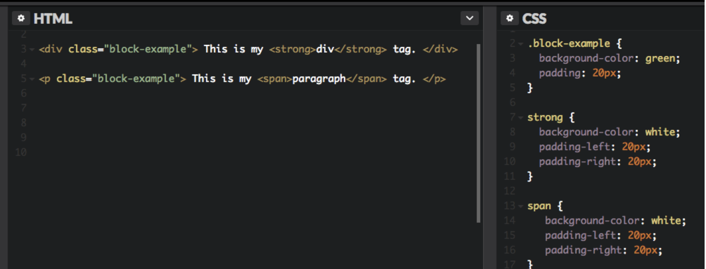
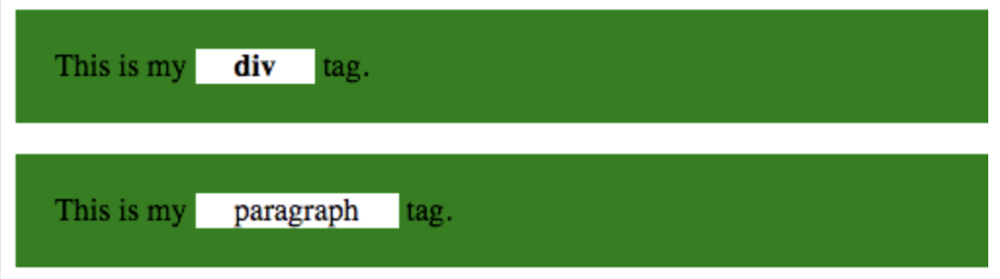
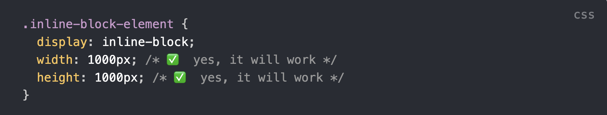
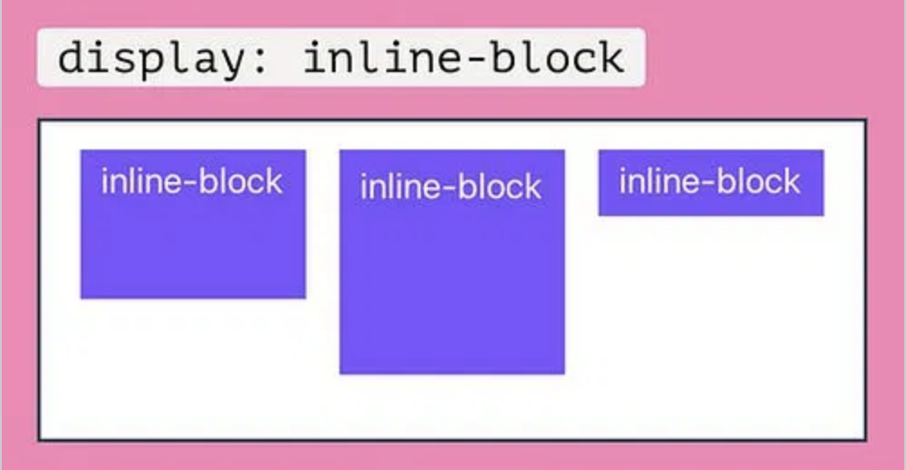

This tag allows the element to sit "inline" (on the same line) or within the neighbouring element. Common tags that operate "inline" are: 'em', 'strong', 'a' and 'img'. They never start on a new line and you can't apply margins or padding to the element. There is no setting the height or width.
 Inline-block elements use the same tags as with "inline", it also sits within another element, not creating a new line..... So what is the point you may ask....? Well with this element you CAN use padding and margins on the element (this is often used when making "buttons"), this allows you to change the height or width of the element, yet the text remains on the same line as the surrounding text.
 